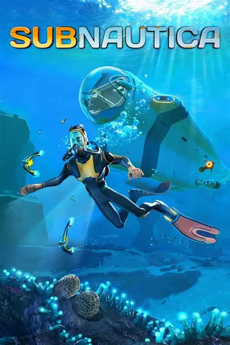
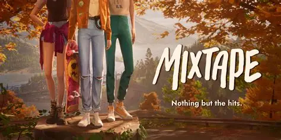
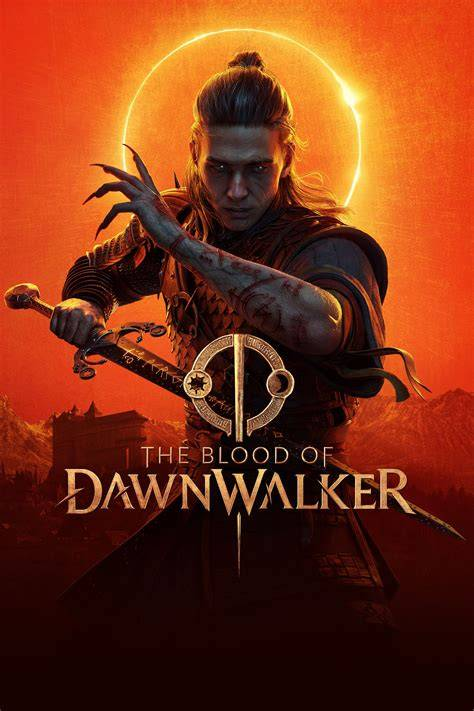
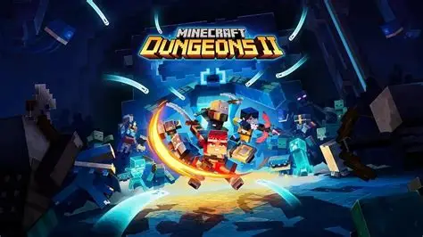
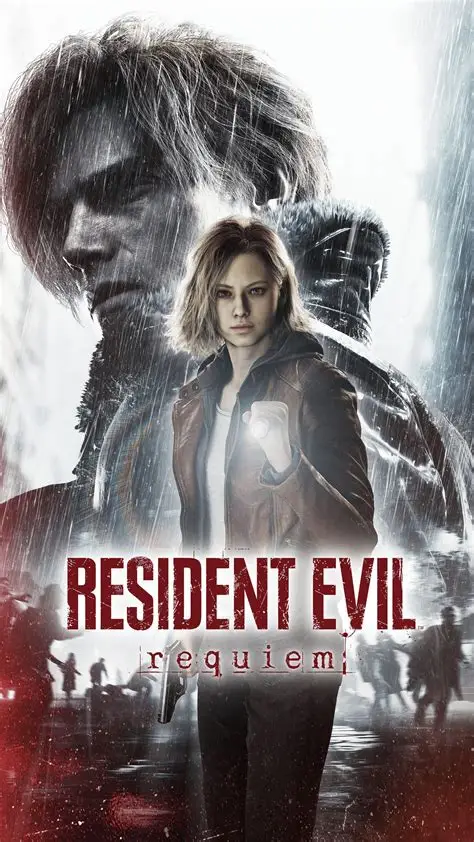
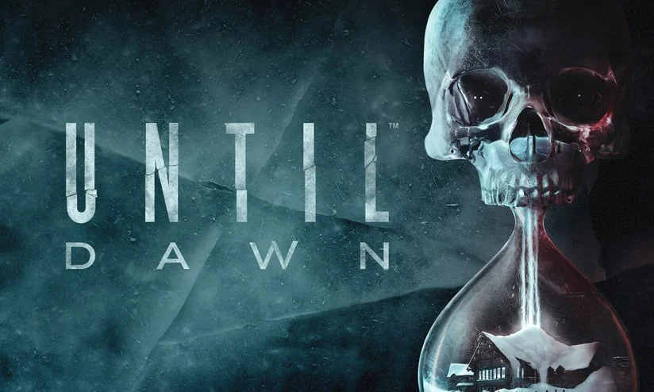

Mais jogados
Em 2026 as empresas vieram com propostas diferentes para jogos, tentando inovar e trazer mais publico para seus jogos, e o publico certo para cada tipo de jogo, como:
- subnautica 2- Exploração aquatica, para pessoas que curtem mundo aberto.
- Mixtape- Jogo narrativo, com escolhas, e com uma trilha sonora marcante.
- The blood of dawnwalker- RPG de vampiros, com diversas possibilidades de classes.



Populares:
Jogos que estao em alta em 2026, temos diversos dele, varios lançados em 2026, e jogos antigos que ainda fazem sucesso
- Minecraft Dungeons 2- Versao alternativa de um jogo antigo e querido por muitos.
- Resident Evil requiem- Novo jogo da franquia de Resident Evil, que traz o agente mais querido e todos de volta, Leon, como personagem principal
- Until Dawn remake- Um jogo ja mutio bem feito, e com mecanicas de jumpscare, e escolhas, ainda melhor apos esse remake.


